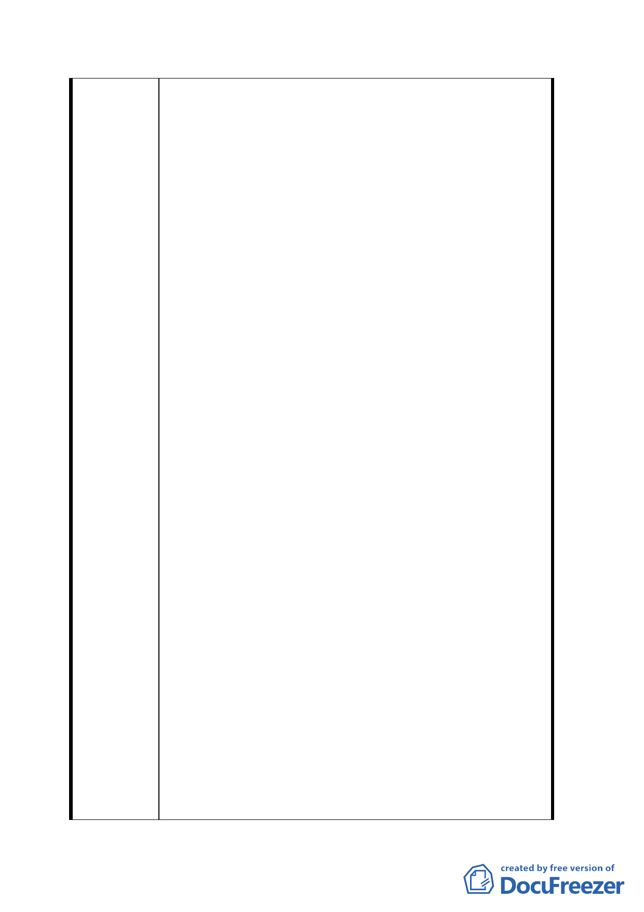

利、義務與貴府捷運局等單位交換意見，惟貴府捷運局
卻在尚未達成共識之際即就單方開發需要，逕將本局經
管之一般商業用地（D1）自行切割擬變更為聯合開發區
（捷），恐有違互信、互重之協商精神。
二、本案 D1 東半街廓緣自配合解決「臺北車站」周邊日益
繁雜之交通，於 73 年間本局提供臺北車站等土地辦理
臺北市區鐵路地下化工程，鐵路地下化後產生新生土地
實測約 26,459 平方公尺，因未列估於原財務計畫及中
央、省、市均有主張，為能整體規劃各權屬單位分配之
土地，85 年間行政院經建會協商獲致共識，將中央持
分 7%之土地調配至華山（本局經管）地區，本局原持
有 C1 街廓土地 4,950 平方公尺，併歸貴府所有，本局
則持有 D1 東半街廓土地面積 17,496.5 平方公尺。復依
行政院經建會 87 年 6 月「臺北市區鐵路地下化後新生
土地分配研究報告」指出新生土地為籌措鐵路地下化財
源為主，本局持有之 D1 街廓使用分區為商業區，其土
地開發價值每平方公尺為 121 萬餘元，預估開發價值約
為 211.7 億元；而貴府捷運局於 94 年 3 月 8 日協調會
提出評估本局經管之 D1（東半街廓）一半基地撥用款
僅 20 餘億元，兩者差距懸殊，並在土地取得方式未確
定之前，逕行決定於計畫公告實施後編列年度預算支
應，致本局基本權益蕩然無存。
三、按貴府捷運局依據 94 年 3 月 8 日與本局研商雙方聯合
開發之基本原則，於 5 月 16 日撰擬「中正機場聯外捷
運線穿越臺北車站特定專用區 D1 用地東半街廓土地開
發協議書」草案，然「協議書」草案卻完全偏離雙方合
作開發之公平、合理及互惠原則，經與貴府捷運局再於
6 月 2 日研商反映及 6 月 13 日以正式函表達本局意見
及疑慮，惟貴府捷運局至今未回應。為配合貴府捷運局
推動「機場捷運」建設及創造 C1 用地較大之開發效益，
而將本局經管原已劃定為「一般商業區」之 D1 用地（東
半街廓）逕提都市計畫變更，本局無法接受。
四、有關本主要計畫案-伍、其他第三款：『本案不適用「大
眾捷運系統工程使用土地上空或地下處理及審核辦法」
第 19 條第一項之規定』乙節，並未依原條文但書敘明
引用其他優惠辦法而須排除增加新建樓地板面積之相
關規定，貴府捷運局以自行適用之條款開發，嚴重損及
本局權益。
五